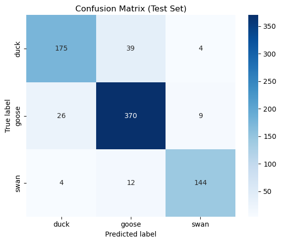

Bird Classification using Machine Learning
This project was a university assessment where I developed a convolutional neural network to classify images of ducks, geese and swans.
Problem
Given an image of a bird, classify it as either a duck, goose or swan.
Data
The dataset consisted of 1814 training images (498 ducks, 981 geese, and 335 swans), and 783 held-out test images (218 ducks, 405 geese, and 160 swans).
Methods
I developed a convolutional neural network using Keras and TensorFlow in Python. I also applied data augmentation techniques to improve model performance, as well as transfer learning with ResNet50.
Results
My final model achieved an accuracy of 88% on the held-out test set, demonstrating strong performance.
Analysis of the confusion matrix shows that the model's main weakness was misclassifying ducks as geese.
